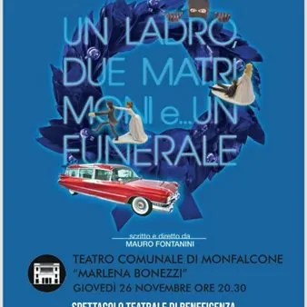

gio 26 nov · dalle 20:30
Un ladro, due matrimoni e... un funerale
Giovedì 26 novembre 2026, alle ore 20.30, il Teatro Comunale di Monfalcone “Marlena Bonezzi” ospita lo spettacolo teatrale di beneficenza “Un ladro, due matrimoni e... un funerale”, scritto e diretto da Mauro Fontanini. Ispirata liberamente all'opera “Er cassamortaro” di Gigi…
 Indicazioni
Indicazioni
- Costi e prenotazioni
- Costo non indicato · Prenotazione non indicata
- Programma
- Programma da verificare. Apri la fonte ufficiale per orari e possibili aggiornamenti.
- In caso di maltempo
- Nessuna indicazione specifica pubblicata.
- Note
- Acquisito automaticamente dalla fonte.
L’EVENTO
Descrizione completa
Giovedì 26 novembre 2026, alle ore 20.30, il Teatro Comunale di Monfalcone “Marlena Bonezzi” ospita lo spettacolo teatrale di beneficenza “Un ladro, due matrimoni e... un funerale”, scritto e diretto da Mauro Fontanini.
Ispirata liberamente all'opera “Er cassamortaro” di Gigi Proietti, la commedia vede al centro della vicenda una famiglia napoletana, quella del commendator Nestore, marito di Clotilde e padre di Bianca, inconsolabile zitella quarantenne. La donna, alla continua ricerca di marito, viene sistematicamente lasciata dai fidanzati non appena vengono a conoscenza della professione del padre, titolare di una ditta di Onoranze Funebri. Ma, come diceva Dario Fo, “non tutti i ladri vengono per nuocere” e così Enrico, uno scassinatore maldestro, entra furtivamente nella casa di campagna dell’impresario di pompe funebri, ma, invece di essere denunciato alla polizia, s'innamora di Bianca. All’improvvisa morte del commendatore, il nipote Ippolito, un promettente avvocato, viene costretto a subentrare alla direzione dell'azienda e viene anche lui lasciato dalla fidanzata. Equivoci, malintesi, colpi di scena e gag esilaranti: questi gli ingredienti di questa esilarante farsa, servita al pubblico con l'intento di farlo “morire” dalle risate.
L'evento è organizzato dal Lions International Monfalcone ETS in collaborazione con il Comune di Monfalcone, il Collettivo Terzo Teatro Gorizia, Marina Lepanto e la BCC Venezia Giulia.
I biglietti per lo spettacolo sono in vendita presso la Biglietteria del Teatro, dal lunedì al sabato 17:00-19:00, oppure presso il Lions Club Monfalcone.
Una serata all’insegna del divertimento e della solidarietà!
Non mancate!
IL PROGRAMMA
Programma e orari
Appuntamenti raccolti dalle fonti elencate. Dove manca un orario, non è ancora disponibile in questa scheda.
Programma pubblicato
- Dal 2026-11-26 al 2026-11-26
INFORMAZIONI UTILI
Prima di partire
- Controllare la fonte prima di partire.
ORGANIZZAZIONE